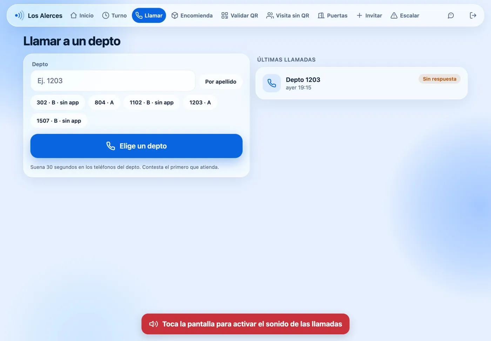
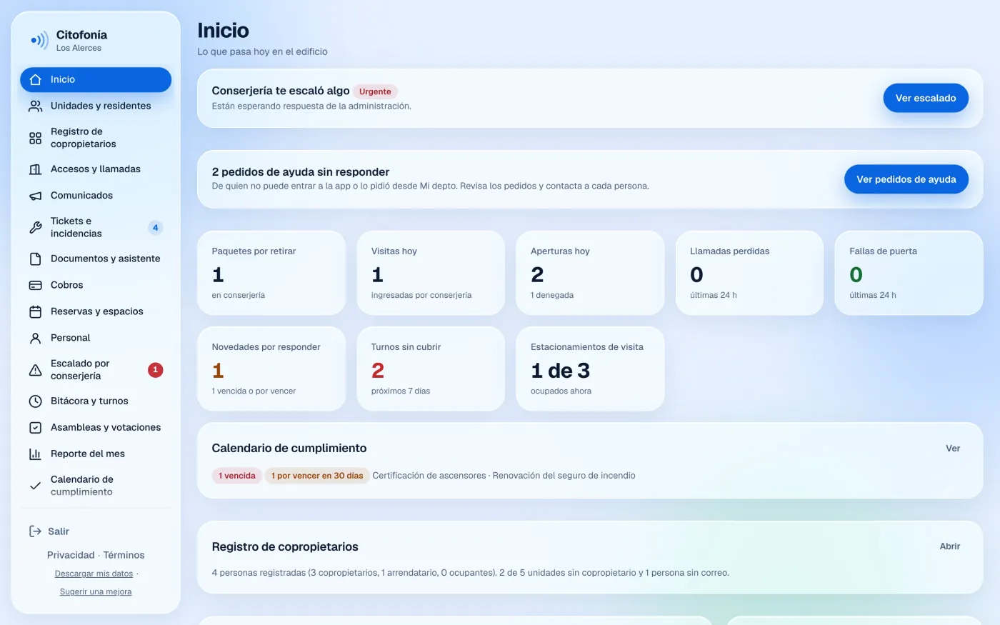
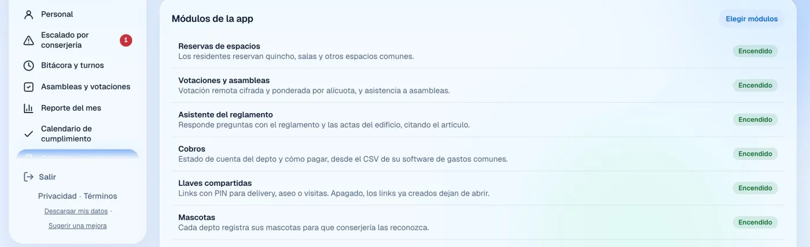

Citofonía: el citófono del edificio en el celular
Llamadas de portería, apertura de puertas, visitas con QR, encomiendas, reservas y votaciones. Una app sirve a residentes y a la tablet de conserjería, y un panel web a la administración. Está en desarrollo, y aquí se muestra con un edificio ficticio.
Un producto, tres puestos
Residente, conserje y administración necesitan pantallas muy distintas, pero trabajan sobre los mismos datos. Los modos de residente y conserjería comparten una app en React Native, y cada edificio enciende solo los módulos que quiere.
 Llamada de portería
Llamada de portería Reservas
Reservas Visitas
Visitas


Cómo funciona una llamada
- Conserjería llama
- Suena 30 s
- Contesta el primero
- Se puede abrir por poco tiempo
La llamada es la parte difícil de este producto. Tiene que comportarse bien cuando suenan varios teléfonos a la vez, cuando alguien contesta en dos dispositivos y cuando una escritura en la base falla a medias.
- Una máquina de estados pura. La lógica de la llamada no tiene red ni almacenamiento, y recibe el reloj como argumento. En el servidor la corre un Durable Object, y en las pruebas una versión en memoria corre la misma lógica.
- Límites que respetan las emergencias. Cada puesto de conserjería tiene una llamada activa, y cada depto tiene un límite de intentos por minuto. Una llamada de emergencia tiene su propio límite, más alto, para que ese tope no la deje fuera.
- Un solo dueño del audio. Una llamada a portería suena en todos los equipos de conserjería, pero el audio y el botón de colgar son del que contestó.
- Las fallas se limpian solas. Si falla una escritura en la base, una tarea que corre cada minuto cierra la llamada colgada, para que no siga bloqueando llamadas nuevas a ese depto.
Privacidad en los datos, no solo en el texto
- Los avisos no llevan nombres. Un aviso de encomienda o visita dice cuántas llegaron, sin nombre, depto ni detalle.
- La auditoría quita los datos personales. Los datos personales, como nombre, RUT, patente y QR, se quitan de los cambios en visitas y encomiendas antes de que lleguen a la auditoría.
- Los datos tienen fecha de vencimiento. Una tarea diaria aplica el plazo de retención de cada tipo de dato.
- Se prueba que los reportes no filtren datos. El reporte del mes solo trae cifras agregadas, y una prueba de base de datos revisa que no salgan nombres ni números de depto.
El texto de privacidad y términos sigue la Ley 21.719, pero todavía es un borrador que debe revisar un abogado.
Pruebas
105 migraciones de base de datos, 88 archivos de pruebas pgTAP para reglas de acceso y datos, y más de 30 archivos de Vitest para la API y el panel. La integración continua también corre pruebas de punta a punta contra una base local. El código es privado, y con gusto lo recorro en una entrevista.